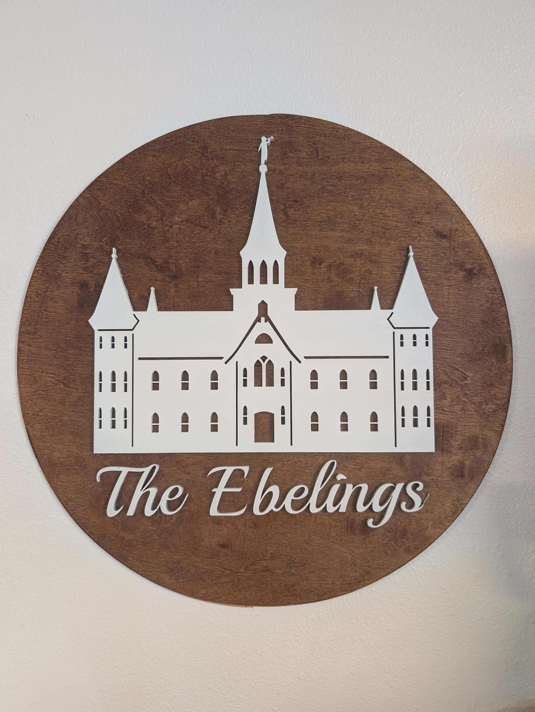
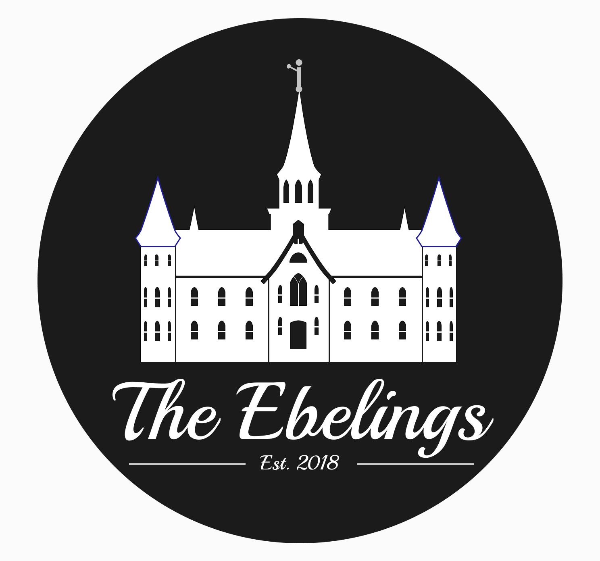
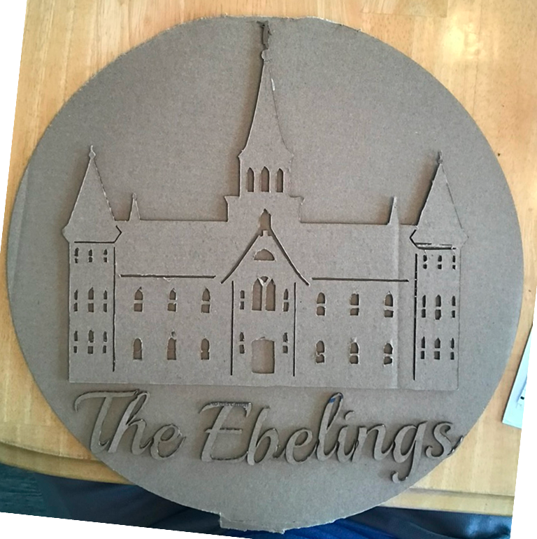
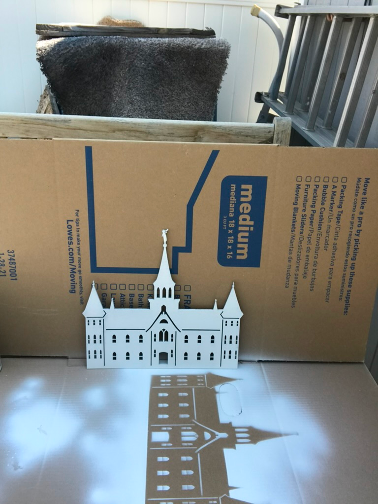

I started with a photo of the temple, then pulled the elements and general structure off of it in Figma — breaking the building down into the pieces I’d actually need to cut.
Once the design was put together, it was ready for the Glowforge — but it still took some tweaking. I ran a test cut on cardboard first to check the proportions before committing to the real wood.


After a few tweaks, I cut the final pieces, painted them, and mounted everything onto a stained wood circle.
